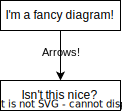

Documentation Build Architecture¶
Tech Stack¶
This documentation is built using Sphinx with a number of extensions.
Code (API) documentation is provided with Doxygen through the use of Breathe, which acts as a bridge from the output Doxygen provides to Sphinx’s reStructuredText (RST) format.
Although it’s not leveraged much in this documentation, you can reference specific files, classes, or methods, and more using Breathe.
Next is the Exhale extension, which provides the Doxygen-style namespace, class, and file lists.
It’s also set up to automatically run Doxygen, so there’s no need for a standard configuration Doxyfile - the modifications to the standard configuration are provided with configuration options on top of Exhale’s defaults.
If you inspect the raw documentation, however, you’ll notice it’s written in Markdown, not the standard RST - this is thanks to the MyST Parser.
Together, this forms a solid foundation for good manual documentation, as well as leveraging Doxygen’s formidable automatic generation capabilities.
After these core extensions, comes theming.
As it says in the footer, this site is built using Sphinx-Immaterial.
Whilst you shouldn’t need to modify its configuration unless the documentation website is actively broken, it is very well documented if you need to do so.
In this documentation, we also make use of some of its excellent extensions: sphinx_immaterial.kbd_keys for pretty keyboard keys (like Ctrl+C!), sphinx_immaterial.apidoc.cpp.cppreference for automatic links to cppreference.com, and finally sphinx_immaterial.graphviz for lovely theme-integrated Graphviz diagrams - though support for Mermaid diagrams is also baked in by default if that’s more your style.
Next, there’s the tweaks to make the docs build with no internet access.
Since this project is built using Nix (more on that in the next section), the entire software stack needs to run offline and therefore requires some extra configuration.
The first offender is the Sphinx-Immaterial theme itself - it sources its font (Roboto by default) from Google’s CDNs - this is obviously incompatible with the sandboxing that Nix applies!
As such, its font option has been set to False and the fonts are “self-hosted” in the _static/fonts directory.
The other item on the list is intersphinx, which provides all the cross-documentation linking you see even just on this very page.
Since it normally tries to fetch objects.inv files (inventories of site content) from the sites themselves, this too needs to be set up locally.
Thankfully, it’s as simple as pointing it to a locally cached file in its mapping rather than fetching the files every time the docs are built - they’re updated in the project’s CI/CD pipeline before building anyway, so they’ll always be correct.
The next item on the list is the embedded figures - you may notice that they look suspiciously like draw.io diagrams, and that’s because they are! This is detailed more in the next section, but they’re built using the tool’s command-line interface to SVGs, which can then be referenced directly in the docs like this:
If you switch between the light and dark themes, you’ll notice that the diagram automatically switches themes too - there’s a bit of JavaScript running which automatically switches in the correct image URL based on the currently selected theme, which you can observe if you wish in _static/js/dark-opt-images.js.
Unfortunately, Sphinx doesn’t include images in the final output which aren’t referenced directly in the documentation, so normally the dark theme images would be inaccessible - this is fixed using a dirty hack which you can see here if you wish.
In the project conf.py, there’s a hook set up to run before the build starts which iterates through every figure in the generated directory (where the figures live) and adds them to an index file, which then ensures that they’re therefore included in the output.
Credits¶
This documentation is loosely based off of Rohit Gaswami’s blog posts documenting setting up Sphinx, Breathe, and Exhale, as well as the follow-up detailing publishing them with Nix.
Build Infrastructure¶
Documentation Building¶
As was previously mentioned, this project is built with Nix, which occasionally brings with it certain challenges (to put it mildly…). Whilst this is great from a reproducibility standpoint, certain software simply wasn’t ever intended to be used in the way that Nix does it. Python (and therefore Sphinx) and draw.io unfortunately both fall into this category and need special treatment to work properly.
CI/CD¶
How to build¶
Unless you’re making major edits to the raw markdown/reST files, or you’re fiddling with the build toolchain, you probably don’t need to build them locally - let the continuous deployment take care of it for you!
However, if you do need to test things locally, you have two options.
The first is to use nix build - this is ideal if you’re making small edits to the documentation and you want to check that everything’s building properly before pushing to GitHub.
The second is to enter a development shell using nix develop - if you want slightly faster builds, you’re modifying Python dependencies, or you’re tinkering with the build toolchain, this is what you’ll need.
Using nix build¶
To build the documentation, simply run nix build .#docs - the output will be in the result symlink in the directory where you ran the command.
Using nix develop¶
Building¶
Run a
git pull- since CI/CD runs Intersphinx inventory updates, you need to make sure your code is up to date before building!Run
nix develop .#docsRun
nix run .#docs.setup- this will build the draw.io figures to SVGs and copy them intodocs/source/generated.cdto thedocsdirectoryWhenever you want to rebuild the docs, run
make html- they will be output inbuild/html.
Note that depending on the edits you made, you may also have to run make clean before rebuilding.
Sphinx is smart enough to only rebuild the files which have changed, which is normally fine - except for when changes propagate to other files.
One such example is adding new files which appear in the navigation tree - although this affects every page, since they all have the navigation sidebar, only files whose toctrees have changed will be updated.
As such, the new file and its associated heading will not be visible in navigation until a full rebuild after a clean.
Python environment management with uv¶
Before managing python dependencies, you will first need to cd to the docs/pyproject directory.
This is because the pyproject.toml and uv.lock files (defining the Python project) have been moved to this directory so that only changes to these specific files cause a rebuild of the Python workspace.
To:
Add dependencies:
uv add DEPENDENCYRemove dependencies:
uv remove DEPENDENCYUpdate the package versions in the lockfile:
uv lock --update
You will have to exit and re-enter the dev shell for any of these changes to take effect, as the Python environment is built and applied upon entering the dev shell.
Alternatively, you can also run uv run COMMAND to run a command in the currently specified Python environment.
However, as previously mentioned, uv can only be run from the directory containing th pyproject.toml file, which limits its usefulness.
For further usage, consult the uv usage documentation - in particular you may find the venv command useful (though at that point you may as well just exit and re-enter the shell to rebuild the environment with Nix anyway).
Serving the built docs¶
darkhttpd is an excellent fast and lightweight HTTP server, and is excellent for quickly testing that the docs are displaying properly.
Whilst simply opening the built files from a file browser is fine 99% of the time, some JavaScript may not run correctly without being loaded from a HTTP server for some reason.
Run nix run nixpkgs#darkhttpd -- DOCS_LOCATION to start serving the documentation (Ctrl+C to terminate).
You may have to experiment with using either localhost:8080 or the loopback address 127.0.0.1:8080 - sometimes one of these won’t load correctly and certain features won’t work.
Using
nix build:nix run nixpkgs#darkhttpd -- ./result/htmlBuilding with the dev shell:
nix run nixpkgs#darkhttpd -- ./docs/build/html(assuming you’re in the repository root)
To serve on a different port than 8080, add the --port PORT flag to the end of the command.